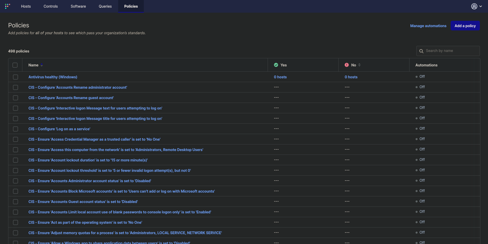
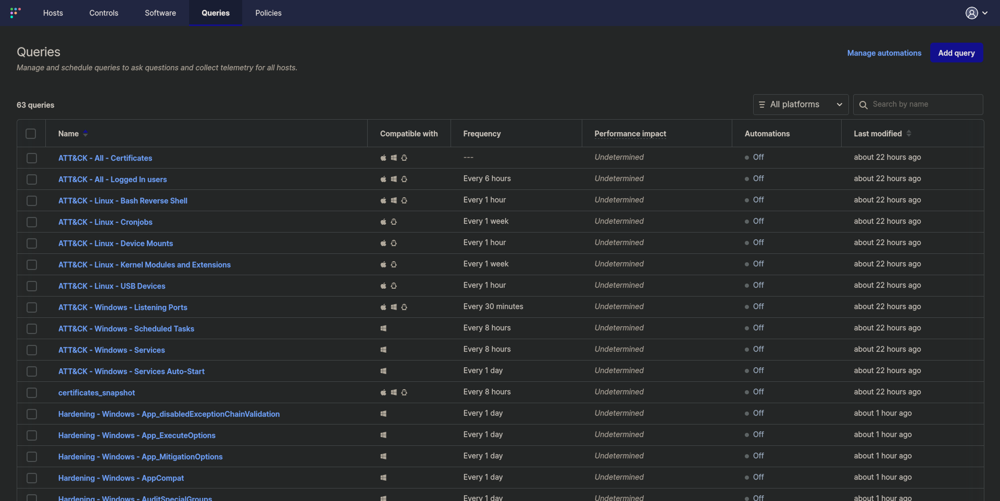
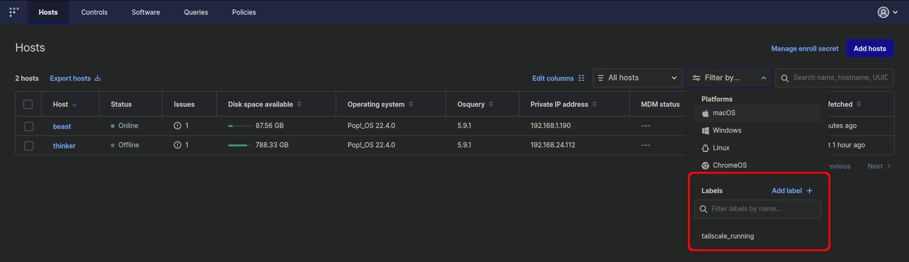
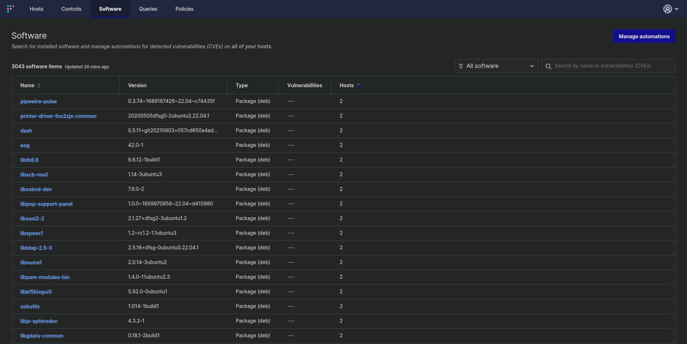

Created: 2023-08-20
The purpose of this post is to cover a few things I've learned about FleetDM (the community version), how to extend it with publicly available queries, and any issues I had to tackle. I've stood up a FleetDM server a few times before (but this time it's different /s) but this time I'm using it for research, work practice, and homelab security; I'm hoping to learn a lot and bring what I've learned to work. That said, this blog post may evolve a bit over time and its content may be disorganized.
Just use CentOS as the instructions recommend. I went with Debian 12 (bookworm) because I wanted to, this lead to database issues which leads to the next point...
If you use MariaDB (default-mysql-server on Debian) then you'll have a bad time.
If you use a self-signed TLS certificate (or one generated by mkcert) you'll need to build packages with the --insecure flag so that clients don't fail to register and connect.
--fleet-tls-client-certificate and --fleet-tls-client-key flags to specify a certificate to use.Actually use fleetctl. It's very handy for converting osquery conf files into yaml for direct import, as well as the general use and configuration of your FleetDM install.
Policies are great for monitoring the compliance of endpoints, and like everything else can be stored as code (yaml files) and applied with a fleetctl command. If you chose to include fleet desktop on your endpoints then any failed policies will be listed in the tray icon and clicking on them will take you to the FleetDM endpoint page to review the findings. These policies usually include a helpful command for remediating the finding.
A great way to get started with Windows CIS policies is to use the provided policies. Note that as long as policy names don't change, you could re-apply this file and it'll update all policy settings.
cd /tmp/
wget https://raw.githubusercontent.com/fleetdm/fleet/main/ee/cis/win-10/cis-policy-queries.yml
fleetctl apply -f cis-policy-queries.yaml

Queries have a lot of power; they can be used for security incidents, vulnerability management, IT resource use monitoring, or anything else you can query on. Each of these queries can be configured to run on a schedule, and if you configure logging then you can setup alerts on the query results (like setting up a query for a threat process, configuring Splunk logging, and building an alert).
Another great thing is that you can recycle other public OSQuery, Kolide, and Fleet queries (just like we did above with Policies and the fleetctl apply command).

I think this feature is under rated and also a bit hidden. Labels can define hosts statically or dynamically (by query), and can be created from the UI from the filter by drop-down or from a fleetctl command fleetctl apply -f custom_labels.yaml with the proper config.
An example of a custom label config that I'm using is to tag hosts with Tailscale.
apiVersion: v1
kind: label
spec:
name: tailscale_running
query: >
SELECT * FROM system_info
WHERE EXISTS (
SELECT *
FROM processes
WHERE name LIKE "%tailscaled%"
);
Note: The "Add Label" button will bring up a query dialog much like the new Queries or Policies dialogs. 
Not much to say about this section of FleetDM, it's how you view all software inventory and the "All Software" drop-down menu has a second option of "Vulnerable Software" so that you can review all detected vulnerabilities. I've not dug too deeply into this, but the server uses the NVD database for these lookups, and I'm quite sure that the detection capabilities are limited to the version number presented (meaning that it might not detect non-installed components, RE: Log4j). 
So far I've read some documentation, stood up a server, registered a few hosts, and loaded in some configuration files. There's a lot I won't learn without using and experimenting further, but below is a quick synopsis of things I've learned as well as where I want to take this project.
fleetctl apply can be used to manage server settings, policies, queries, labels, and teams. Fleetctl basically allows you to manage the entire infrastructure, and query endpoints, all from the CLI.Though premium features look amazing, and are killer enterprise features.